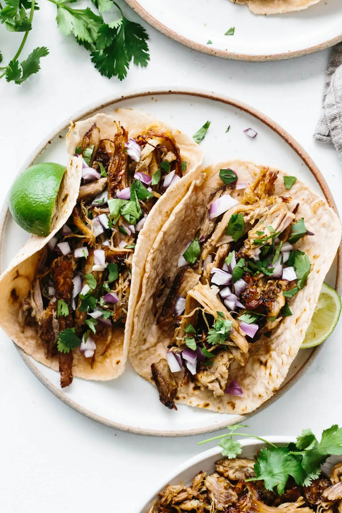

Tacos - Carnitas

A classic recipe that will leave you asking for more!
A Mexican dish that is regulary enjoyed by many. While this recipe calls for cilantro, onions, and corn tortillas, feel free to make any substituions you'd like! The best kind of tacos are the ones that you enjoy.
Ingredients
- Corn Tortillas
- Carnitas
- Cilantro
- Onion
Optional
- Salsa Verde
- Salsa Roja
- Sour Cream
Steps
- Place your carnitas in a pan on a medium heat. Cook throughly for 10-20 minutes.
- Dice your cilantro and onions into small pieces.
- Heat your corn torillas on the stove top.
- Feel free to mix your cut cilantro and diced onions into a small bowl.
- Place carnitas into a small bowl for serving.
- Enjoy your delicious dinner!
HOME